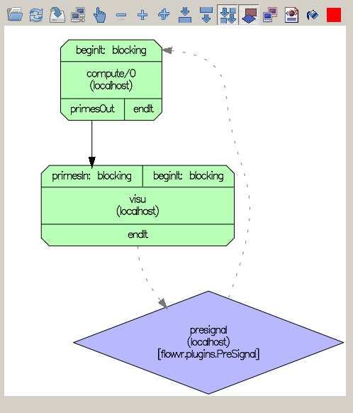

FlowvrApp tutorial
What is FlowvrApp?
Vocabulary
The FlowVR middleware is based on a graph. Each node
(Primitive) of the graph is an event-driven computation
loop. Primitives have input and output Ports. Edges of the
graph connect output ports to input ports. Primitives are identified
by a unique name (or id), ports have a name which is unique within the
primitive they belong to. Data blocks, or messages can be sent
through the ports from one primitive to another.
A Module is a primitive that is run as an independent
program. A Synchronizer or a Filter primitive is running
on the FlowVR daemon (flowvrd).
FlowVR setup
To set up the graph, the flowvr command uses two
configuration files (myapp is the application name):
-
myapp.run.xml contains the command lines to start
up the modules.
-
myapp.cmd.xml lists the filters and
synchronizers that have to be start up, and the connections that
should be established between ports.
FlowvrApp
FlowvrApp is an API used to describe the FlowVR graph. It can be used
to generate the myapp.run.xml and myapp.cmd.xml
files, which are often too verbose to edit by hand.
FlowVRApp is written with Python. Previous versions of FlowVR ( < 1.7. ) relied on deprecated C++ and Perl utilities.
This document
This document presents FlowvrApp through a series of examples of
increasing complexity. Examples require a functional FlowVR
installation, but no previous knowledge about FlowVR is assumed.
Basic knowledge about the Python language is preferable (you may want
to look at the Python
tutorial). Also some familiarity with the shell is useful (setting
paths, essentially), the shell used here is bash.
A simple example: tictac
Here we present the steps to make a module send text messages to
another one. We assume that the FlowVR commands are in the path. If
this is not the case, source flowvr-config.sh
(found in FlowVR's install dir).
Two modules
The put module has a single output port, text. It
sends the text "tic" and "tac" alternatively on this port. The module
get has an input port text and displays all messages
arriving on this port.
First the modules must be compiled. For this, go to subdirectory
<flowvr source
dir>/flowvr/flowvr-examples/tictac. Then run
bash make_app.sh
the executables get and put are now in the
bin/ subdirectory. If you try to run them direclty, they
will complain that they cannot register with FlowVR.
Graph description
The FlowVRApp code that describes the graph is
from flowvrapp import *
putmodule = Module("put", cmdline = "bin/put")
outport = putmodule.addPort("text", direction = "out")
getmodule = Module("get", cmdline = "bin/get")
inport = getmodule.addPort("text", direction = "in")
outport.link(inport)
app.generate_xml("tictac")
code
Let's walk through the code:
- The
import statement is to make all definitions
from the flowvrapp library available in subsequent code.
- The
Module(...) statement calls a constuctor
for a module object. It requires at least a name in the graph
("put") and a command line that corresponds to the module
("bin/put", the path to the executable). It is recommended to
use the parameter = value notation Python allows, to clarify
what parameter is passed.
- Ports of primitives are defined with the
addPort method, that also needs a name. Caution!
The name of the port in FlowvrApp must be exactly the same as
the name that is used in the module's code. However, not all the
ports that are defined in the module's code need to be declared
in FlowvrApp. The addPort method retuns the
created port. It can also be retrieved with
module.getPort(portname).
- Ports are linked with
outport.link(inport). Order matters: the reverse
does not work. A single output port can be linked to several input ports,
but not the way round.
-
app is an object that implicitly records all
declared primitives. Its generate_xml method
produces the XML files used by flowvr to start the FlowVR
application. Its argument is the prefix used for those XML files.
To generate the graph, put the above code in a file file
tictac_0.py in the same directory (<flowvr
source dir>/flowvr/flowvr-examples/tictac/).
In this example, the cmdline = ... arguments
explicitly indicate the path to the module exectuables.
You have to tell Python where to find the FlowVR app library, with:
export PYTHONPATH=<flowvr source dir>/flowvr-contrib/utils/py_flowvrapp
then run:
python tictac_0.py
This command produces the tictac.run.xml and
tictac.cmd.xml files required to start the FlowVR
application. The graph can be viewed with flowvr-glgraph
tictac.net.xml:

Run
In a separate terminal, start the FlowVR daemon flowvrd. It
is required to coordinate the execution of any FlowVR application.
Run the application with
flowvr tictac
This will display the sent and received messages on the console. Stop the application
with ctrl-C or by typing "stop" (FlowVR displays a prompt that is not
always visible due to the the module outputs).
Run on several machines
FlowVR is especially powerful to coordinate many machines running even
more modules. Let's run get and put on two machines: mohawk
and opata (adjust to your needs).
In the code
The simplest part is to change the tictac.py code. Just
add an argument to the Module constructors:
...
putmodule = Module("put", cmdline = "bin/put", host = "mohawk")
...
getmodule = Module("get", cmdline = "bin/get", host = "opata")
code
Regenerate the XML files with python tictac_1.py.
When there are many modules to run on a single host, it can become
tedious to specify the host at each time. The default host (that is
set when the host parameter unspecified) is
app.default_host, which can be adjusted to something else
than "localhost".
Running
To run a FlowVR application over several machines:
- FlowVR should be installed on all machines. The simplest
way to guarantee this is to install it in a shared directory
that is mounted in the same location on all participating
machines.
- The machines should be reachable by ssh without password
from the machine the
flowvr client is run on. In
addition, the FlowVR utilities must be in the path (make sure
flowvr-config.sh is sourced in the shell's startup
scripts)
- The FlowVR daemon
flowvrd must be running on
all the machines, so start it up on both hosts.
The application can be run in the same way:
flowvr tictac
Debugging
To debug FlowvrApp problems, just add print's or
pdb.set_trace()'s in the Python code. You can also
pinpoint problems by looking at the generated XML files.
The flowvr launcher outputs a lot of messages on startup,
and the output from the modules (including "segmentation fault"
messages) appears there. If something does not work as expected look
carefully in this output. The output of individual modules can be
redirected to log files (prefix log-) with
flowvr's -l option.
When an application is not closed properly (eg. if it crashed or is
stopped with Ctrl-C), the modules must often be killed manually, and
flowvrd restarted. The command flowvr-kill kills "zombie"
modules running on the current host.
To debug synchronization problems (deadlocks, flooded message
queues,...), flowvrd can be run with the
--top option, that displays the number of messages on
each queue.
Module objects
When modules get more complicated, and if they are used several times,
it is convenient to define a specific class for them.
The class must inherit the Module class. Most often, it
contains only code in the constructor. For example:
class PutModule(Module):
" a module that puts text messages on its text output port "
def __init__(self, name, host = ""):
# call the parent constructor
Module.__init__(self, name, cmdine = "bin/put", host = host)
self.addPort("text", direction = "out")
...
putmodule = PutModle("put")
...
outport = putmodule.getPort("text")
outport.link(inport)
code
Primes
The primes example requires the modules to be synchronized. It also
shows how to combine several modules into a component.
Without synchronization
The simplest version is again a producer-consumer with two modules:
- compute loops over integers, and checks whether they
are prime numbers. Those that are found to be prime (with a
simple brute-force algorithm) are sent on its output port
primesOut.
- visu opens a graphical window and displays the
primes received on its primesIn input port as dots
on a spiral.
Go to the <flowvr source
dir>/flowvr/flowvr-examples/primes directory and compile the
modules with bash make-app.sh. The module executables
appear in the bin/ subdirectory.
The source of the modules is generously commented, so it is also a
good starting point for module programming.
The flowvrapp code for this application is thus:
from flowvrapp import *
computerun = FlowvrRunSSHMultiple('bin/compute', hosts = 'localhost', prefix = 'compute')
compute = Module("compute/0", run = computerun)
compute.addPort("primesOut", direction = "out")
visu = Module("visu", cmdline = "bin/visu")
visu.addPort("primesIn", direction = "in")
compute.getPort("primesOut").link(visu.getPort("primesIn"))
app.generate_xml("primes")
code
The code is similar to the tictac example.
A FlowvrRunSSHMultiple object is required for the compute module because
it is designed to be run in several instances (more on this later).
Compile and run with
python primes_0.py
flowvr primes
Depending on the relative speed of the CPU and display, compute
may produce prime numbers faster than visu module can
display them. When messages are not consumed, they stack up into
flowvrd's memory, which eventually fills up and crashes the
application.

Synchronization basics
We have to dive a little more into how FlowVR handles messages.
Stamps
Messages have metadata associated with them, called stamps.
Empty messages that have only metadata are called stamps messages.
A stamp is a dictionary that maps names to values, it
contains at least an iteration number (named it).
Ports are defined to transmit either the message and its stamps (full port),
or just the stamps (stamps port).
The connection rules are:
- ports of the same type can be connected
- full output ports can be linked to stamps input ports: they
get only the stamps part of the messages
- stamps output ports cannot be linked to full input ports
A module event loop
A module is a event processing loop which usually has the form:
// initialize API
...
while (!module -> wait())
{
// read input message
module -> get(input_port, input_message);
// handle messge
....
// write output message
module -> put(output_port, output_message);
}
The wait() call returns when there is a message on all
its input ports that are connected (non-connected ports are ignored). wait()
returns true when the application should be stopped.
All modules have two predefined stamps ports: beginIt and endIt.
A message is automatically sent on endIt every time the module enters wait().
Symmetrically, the processing cannot start if beginIt is connected and there is no message
on it.
Controlling the module's output rate
In our case, in order to limit the throughput of compute, visu's
endIt can be linked to compute's beginIt. This way, compute will not start
an iteration before visu has ended processing the previous:
...
visu.getPort("endIt").link(compute.getPort("beginIt"))
....
code
The output rate of the module is effectively controlled in this way.
This example happens to work because compute's event loop
is not exactly as described above: a message is sent on the primesOut
port before the first call to wait(). If the two
modules would use the standard loop above, they would deadlock.
Also, computation and visualization are not simultaneous, because at
any moment at least one of the two modules is
waiting for a message to arrive on its input port: they are not
executing in parallel. This can be viewed on the sketch below:

Each horizontal line represents what a module is doing over
time. Arrows between axes show the exchanged messages.
The presignal filter
Intuitively, making them run in parallel just requires that compute is
run two times instead of one before it has to wait for visu's
signal. This could be coded in the compute module. However,
hard-coding the number of puts before the first wait does not
scale: if more modules are in the loop, this number has to be adjusted
also, so it depends on the FlowVR graph topology.
Therefore, there is a special kind of primitive, the PreSignal,
that transmits stamps messages, and also sends a specified number of
messages before its first wait.
The pre-signal is not a module, it is a filter. Filters are
primitives that run as a thread in the FlowVR daemon, and that have
access to the message queues of their ports. They do not necessarily
have a beginIt and an endIt.
In FlowvrApp, standard filters are defined in the library
filters.py. The PreSignal can be used with:
from flowvrapp import *
from filters import *
...
# nb is the number of messages to send before the first wait
presignal = FilterPreSignal("presignal", nb = 1)
visu.getPort("endIt").link(presignal.getPort("in"))
presignal.getPort("out").link(compute.getPort("beginIt"))
...
code
The corresponding graph is:

Synchronizing multiple inputs
An example
Now the display of visu will be controlled by the user: a
new module, capture, opens a window and waits for key events on the
window. It sends messages at a predefined frequency (1 kHz) containing
the state of the arrow keys.
The visu module now has two connected inputs, keysIn and
primesIn:
...
capture = Module("primes/capture", cmdline = "bin/capture")
capture.addPort("keysOut")
capture.getPort("keysOut").link(visu.getPort("keysIn"))
...
code
It processes the messages only when there is at least one available on
each port. In this case, capture is producing messages faster than
compute. Therefore, the capture messages are queueing up in flowvrd,
eventually crashing it.
Synchronizers
To avoid this, we use a synchronizer. Similar to a filter,
synchronizers are primitives that run in the FlowVR daemon.
Here, we use a GreedySynchronizer synchronizer. It has
two stamps input ports: endIt (yes, it is an input port) and
stamps. Port endIt shoud be connected to a port that outputs
messages slowly, and stamps should be connected to a fast
port. Every time a slow message arrives, the last fast message that
arrived is sent on the GreedySynchronizer's output port,
order. Previous fast messages are discarded.
The GreedySynchronizer handles stamps messages, but here the
messages to be subsampled, from capture's keysOut, are full: the order
port will output only the stamps part of the message.
To get the full message, we can use a FilterIt filter. A
FilterIt transmits messages from its in port to its out
port. Transmitted messages are selected on the it field
of their stamps, other messages are dropped. The selected
it's are those of the stamps messages received on the
order port of the FilterIt.
By chaining the order ports of the GreedySynchronizer and the
FilterIt, it is possible to apply the same filtering on the stamps and
the full message of the "fast" port.
In our case, the slow port is that comming from compute
via presignal, and the fast one, that of capture.
Therefore, we can synchronize them with:
...
sync = GreedySynchronizor("sync")
presignal.getPort("out").link(sync.getPort("endIt"))
capture.getPort("keysOut").link(sync.getPort("stamps"))
filterit = FilterIt("filterit")
capture.getPort("keysOut").link(filterit.getPort("in"))
sync.getPort("order").link(filterit.getPort("order"))
filterit.getPort("out").link(visu.getPort('keysIn'))
...
code
The corresponding graph is:

Further reading
More information on the available filters and synchronizers can be found
in the Doxygen documentation, generated in FlowVR's build directory by
make doc-flowvr
Then point a browser to flowvr/doc/html/index.html in the
build directory.
Composites
When FlowVR applications get larger, a linear description of the graph
becomes harder to read. It becomes useful to group primitives together
into composites.
Grouping primitives
It is convenient to handle a set of related primitives as if it was a
single object. Therefore, composites have a getPort
method that can be used to expose the ports of the enclosed
primitives. They do not have an addPort, though: ports
can only be created on primitives.
It is conventional to see composites like directories in a file
hierachy. Therefore, primitives in a composite are of the form
compositeName/primitiveName (the slash indicates the
structure). Composites can be nested also.
An object that is either a primitive or a composite is called a
component.
In our example, a Display composite will group together
visu and capture, and simply expose visu's
primesIn and endIt:
class Display(Conponent):
""" Displays primes in a window, and a secondary control window """
def __init__(self, prefix):
Component.__init__(self)
visu = Module(prefix + "/visu", cmdline = "bin/visu")
...
capture = Module(prefix + "/capture", cmdline = "bin/capture")
...
presignal = ...
sync = ...
### expose input and output ports
self.ports["endIt"] = visu.getPort("endIt")
self.ports["primesIn"] = visu.getPort("primesIn")
display = Display("display")
compute.getPort("primesOut").link(display.getPort("primesIn"))
code
The prefix is the prefix of all primitives in the
composite. Note that the presignal
that was used for both compute and sync has to be
duplicated.
The greedy
In fact, the synchronization pattern described above, that re-samples messages from a fast
port to match the speed of a slower port is classical: it is
called a Greedy.
The composite encapsulating the primitives of a Greedy is a
Greedy object (defined in the filters.py
library), so the code above can be simplified to:
...
class Display(Component):
def __init__(self, prefix):
...
# greedy that samples captures's keysOut at the speed of visu's endIt
greedy = Greedy(prefix + "/greedy")
visu.getPort("endIt").link(greedy.getPort("sync"))
capture.getPort("keysOut").link(greedy.getPort("in"))
greedy.getPort("out").link(visu.getPort("keysIn"))
...
code
Multiplying compute modules
Now we can run several instances of compute, to exploit mulitple CPUs
or modules on other machines. We will group the computation modules in
a Compute composite.
Running more instances
The FlowvrRunSSHMultiple object we saw previously runs
several instances of an executable. It is called like
computerun = FlowvrRunSSHMultiple("bin/compute", hosts = "mohawk mohawk opata", prefix = "compute")
Where:
- the first argument is the command line of the module to run
-
hosts is a string with host names, separated
by spaces. If a host appears several times, the module is run in
several instances the specified machine.
-
prefix is the prefix of the name of the
modules.
In this case, the corresponding modules must be constructed like:
module = Module("compute/0", run = computerun)
module = Module("compute/1", run = computerun)
module = Module("compute/2", run = computerun)
The name of the module must match the prefix given to
FlowvrRunSSHMultiple, and they are numbered from 0 to n-1
(n is the number of instances).
Merging results
The FilterMerge filter has an arbitrary number of input
ports, in0, in1,..., inn-1. When a message is
available on all of its ports, they are concatenated into a single
message that is sent on the out port. New input ports are
added to the FilterMerge with newInputPort().
We have the necessary components for our parallel compute:
class Compute(Component):
def __init__(self, prefix, hosts):
Component.__init__(self)
computerun = FlowvrRunSSHMultiple('bin/compute', hosts = hosts, prefix = prefix)
# hosts_list: convert hosts to a list
hosts_list = hosts.split()
ninstance = len(hosts_list)
merge = FilterMerge(prefix + '/merge')
all_beginIts = []
for i in range(ninstance):
compute = Module(prefix + "/" + str(i), run = computerun)
compute.addPort("primesOut", direction = "out")
compute.getPort("primesOut").link(merge.newInputPort())
all_beginIts.append(compute.getPort("beginIt"))
self.ports["primesOut"] = merge.getPort("out")
self.ports["beginIt"] = tuple(all_beginIts)
...
compute = Compute("compute", hosts = "localhost " * 4)
display = Display("display")
compute.getPort("primesOut").link(display.getPort("primesIn"))
code
A few comments:
- The
host = "localhost " * 4 specifies that the
compute modules should be run on the local host in four
instances (in Python a string muliplied by an int returns this
number of concatenated strings).
-
all_beginIts is a list of all beginIt
ports that must be connected. For an input port inC of a
composite, it is acceptable to have a tuple of primitive input
ports. This means that a port connected to inC should be
connected to all the primitive ports.
On multiple hosts
Running this example in 4 instances on the machine mohawk (which is
the localhost) plus 4 more instances on opata should be a matter of
setting
compute = Compute("compute", hosts = "mohawk " * 4 + "opata " * 4)
Unfortunately a few more adjustments are necessary:
class Compute(Component):
...
for i in range(ninstance):
compute = Module(prefix + "/" + str(i), run = computerun, host = hosts_list[i])
...
class Display(Component):
...
visu.run.options += "-x DISPLAY "
capture.run.options += "-x DISPLAY "
...
app.default_host = "mohawk"
compute = Compute("compute", hosts = "mohawk " * 4 + "opata " * 4)
code
Where:
-
app.default_host is set to localhost, but
FlowVR is confused because localhost is the same as
mohawk. Therefore, all primitives should be mapped by default on mohawk.
- since the modules that use X (the graphical interface) are
not running on the localhost anymore, they don't have access to
the
DISPLAY variable. It must be explicitly
propargated to the modules with
visu.run.options += "-x DISPLAY ".
- the compute modules need to be mapped explicitly on
the hosts they are running on, via
host =
options. Order does matter.
Tree merge
We are in a context where computations are run on many "slave"
machines, and the results of the computations must be merged on a
central "master" machine. A simple way of doing this is to send all
the bits to the master and do the merging on it. However, due to the
message fragmentation and the cost of merging results, this may
overload the master, while the slaves are idle.
A solution to this is to make sub-groups of slaves and merge the
results on these subgroups. This can be done recursively, in a tree of
merges:
def make_filter_tree(prefix, in_ports, out_port,
arity = 2, node_class = FilterMerge):
...
class Compute(Component):
def __init__(self, prefix, hosts, out_port):
...
all_primesOut = []
for i in range(ninstance):
compute = Module(prefix + "/" + str(i), run = computerun, host = hosts_list[i])
all_primesOut.append(compute.getPort("primesOut"))
...
make_filter_tree(prefix + '/tree', all_primesOut, out_port)
...
display = Display("display")
hosts = "mohawk " * 4 + "opata " * 4
compute = Compute("compute", hosts = hosts, out_port = display.getPort("primesIn"))
code
The function make_filter_tree is not standard, it is
defined in primes_9.py. It needs to know where the input ports and the
output port come from, to decide where to map the tree nodes. The
resulting tree looks like:

Extras
Source files
The source files of the Python FlowvrApp are:
-
flowvrapp.py contains classes for the basic objects
of flowvr app (Primitve, Module, Filter, Port) and generation code for
the .run.xml and .cmd.xml files
-
filters.py contains classes for standard flowvr filters
-
portutils.py is a limited implementation of the
Portutils's flowvrapp side. It contains the PortModule primitive.
-
balzac.py contains the BalzacLostInSpaceViewer and
an implementation of the Balzac tutorial.
Further reading
This is the end of this tutorial. For further information, you can look at:
- the Python FlowVRApp is less than 400 line of code, so
don't be shy of taking a look at it.
- for the module API, look at the Doxygen documentation of
the code, which is at least an easy way to navigate in the
source files.
- the example modules. They are well commented and
up-to-date, since they also serve as test cases for FlowVR
developers.
Contact: Matthijs Douze (matthijs.douze@inria.fr)